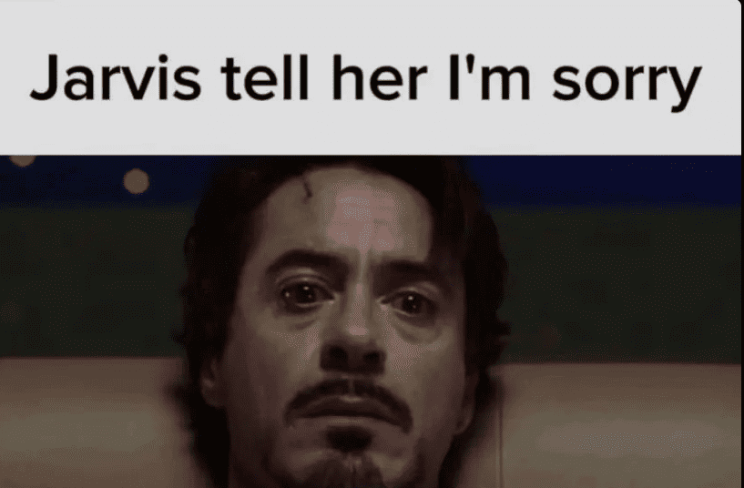

aku tau aku udah ngecewain kamu dan bikin kamu gak nyaman, maka dari
itu aku akan berusaha lebih bijak lagi. harapanku semoga kedepannya
kamu bisa lebih enjoy untuk ngelakuin apapun di sosmed, aku juga
udah lakuin beberapa hal seperti remove seccond account sebagai
batasan yang ku buat untuk diriku sendiri.

🤳foto2.jpg
ih beneran serius kamu udah mau maafin aku??
yaaa walaupun belum 100% legowo gpp deh...tapi beneran kan?? kita
masih bisa temenan baik iya kan??
🎁
i have something for uuuu
makasih yaa udah jadi manusia yang sabar bgttt mwehehe
N
AKU ADA AKUN SHARING NETFLIX PREIMUM NIHHHH
kamu kalau lagi istirahat atau lagi
main sama temen, bisa buanget nonton Netflix yawww,
uu deserve it! semoga menghibur
(ss ke aku tampilan ini ya buat konfirmasi, makasih do)
pomofocus
0 sessions
25:00
POMODORO
Activity
Menit per hari — 7 hari terakhir
FocusShortLong
0min total
0day streak
0sessions
History
Catatan sesi yang tersimpan
Belum ada sesi tersimpan. Selesaikan sesi pertama kamu! 🍅